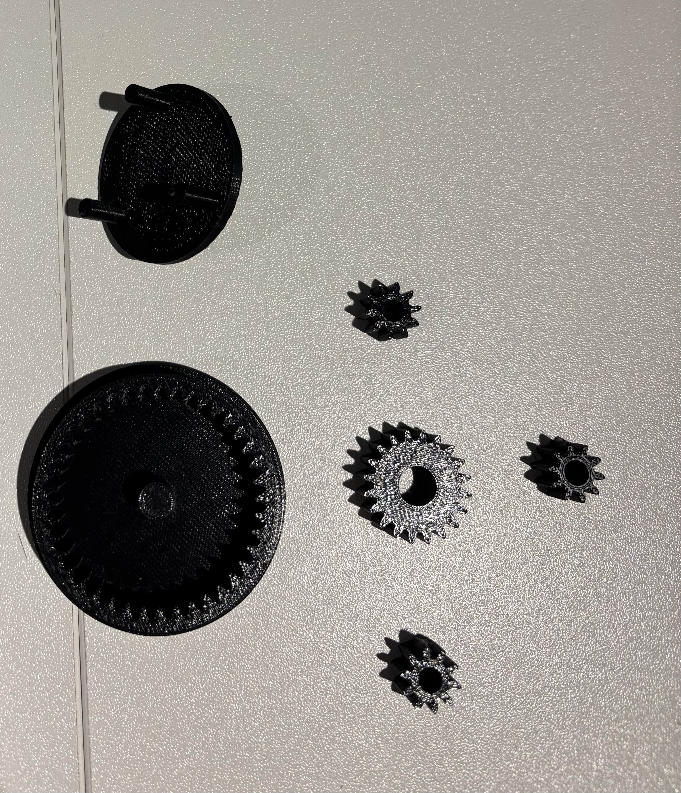
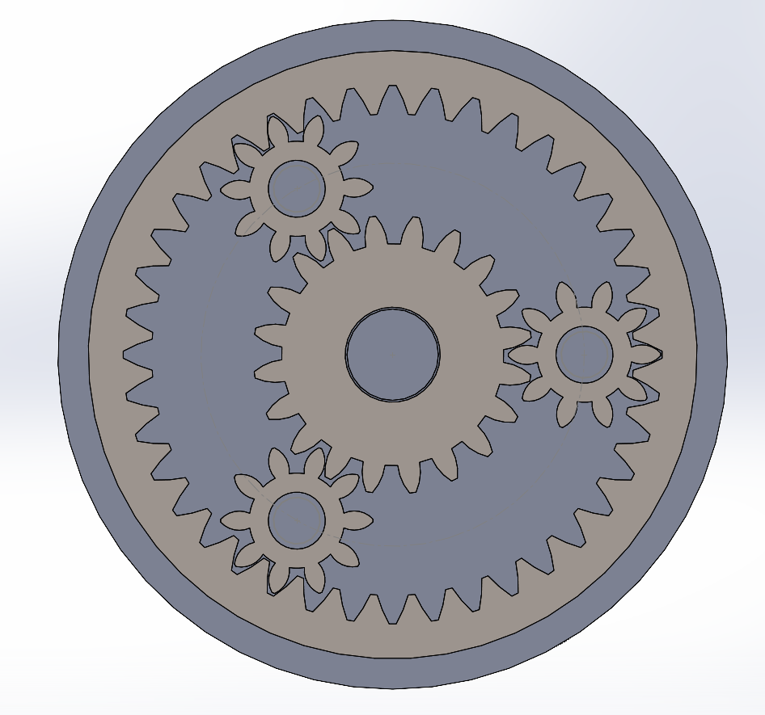
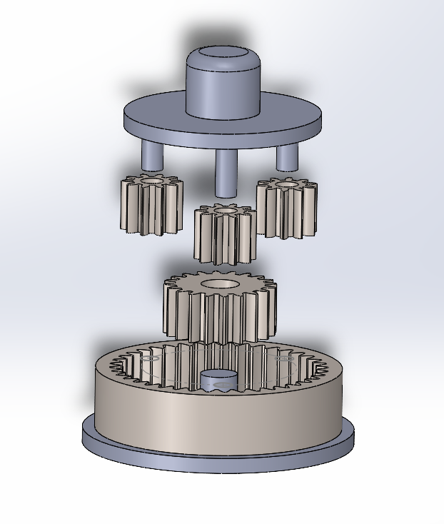
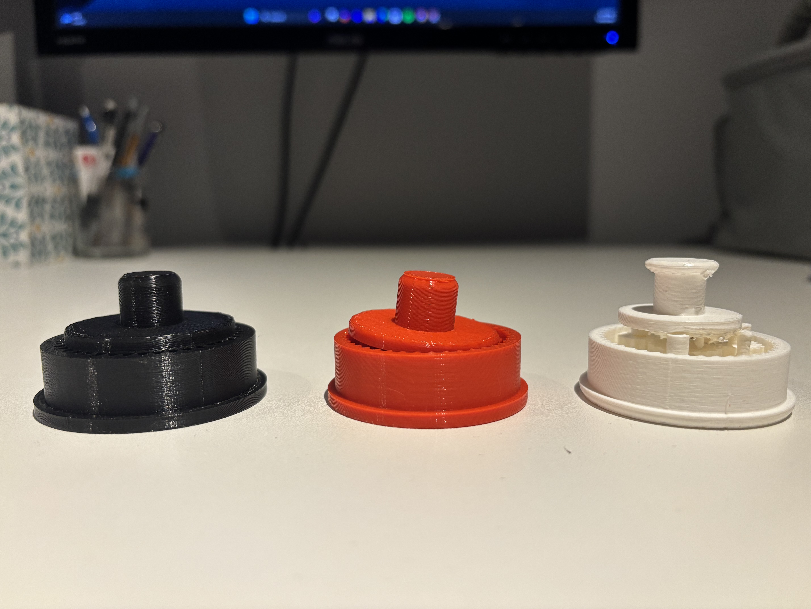
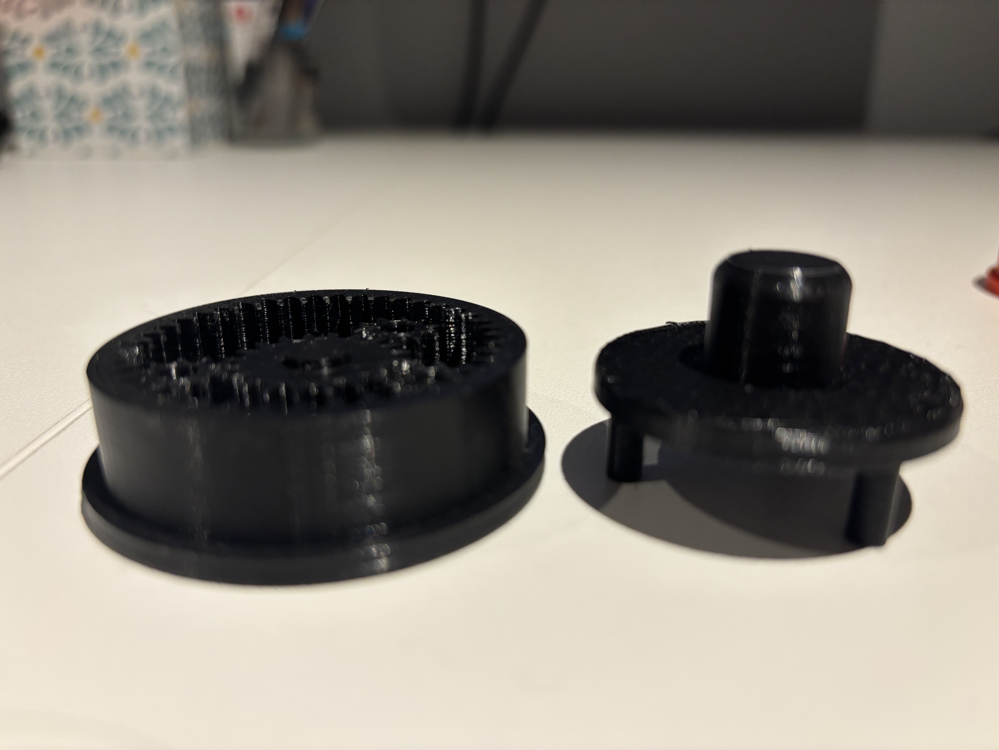
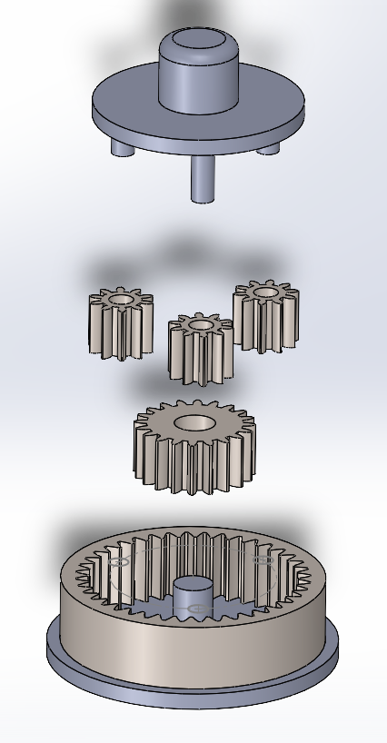

Project Type
Mechanical CAD Design / Rapid Prototyping
Featured CAD Case Study
I designed and printed a compact planetary-gear fidget toy in SolidWorks. My focus was making the parts work together after printing: I controlled the gear spacing, added clearance where parts rotate, and checked the assembly before fabrication.

I built the gears and housing as separate parts, then assembled them in SolidWorks. This let me adjust individual features while checking how each change affected the complete mechanism.
I used SolidWorks Toolbox as the starting point for the gears, then adjusted the assembly for printing. This kept the tooth geometry consistent while letting me focus on spacing, fit and motion.
Diametral Pitch (DP): 24
Pressure Angle: 20°
Tooth Count: Sun 14 | Planet 14 | Ring 42
I linked the gear spacing to the tooth counts so that design changes would preserve alignment. Assembly constraints kept the shafts centered while allowing the intended rotation.
Center Distance Formula: C = (Ns + Np) / (2 x DP)
Using Ns = 14, Np = 14, DP = 24
Center Distance = 0.5833 inches
This distance constrained relative sun/planet axis placement in the assembly.


Ideal CAD geometry was adjusted to account for real-world FDM process behavior and tolerance stacking.
I reduced the tooth-flank geometry by 0.005 inches to add a small gap between meshing teeth. That clearance helps accommodate the dimensional variation of an FDM print.
I added 0.015 inches of diametral clearance around rotating shafts so the printed parts could turn without an interference fit.


SolidWorks evaluation tools were used to validate assembly integrity before fabrication.
I used these checks to resolve overlaps and confirm internal spacing before printing.
I produced a complete CAD assembly and printed prototype, connecting gear geometry, assembly motion and manufacturing clearances in one design. The main lesson was to design for the printing process early, rather than expect an ideal CAD fit to work unchanged in hardware.
